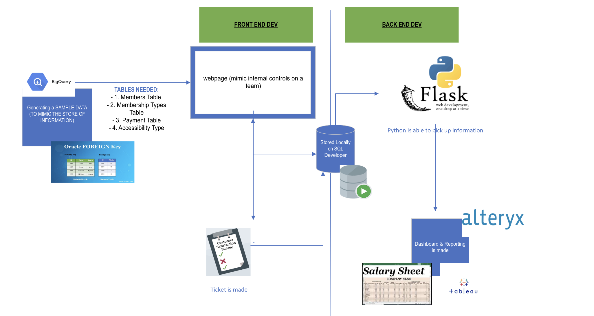

The Membership Management System Prototype developed features an integrated ticketing and survey mechanism, streamlining user interactions for database modifications in SQL. This approach bridges user requests and backend processing, enabling efficient tracking and execution of database amendments. The backend is engineered to simulate real-world scenarios, including appointment scheduling, medical record management, and personal data handling, utilizing randomized data sets for robust testing. The frontend of the system presents analytical insights in a user-friendly interface. A developer-centric ticket-based model enhances user engagement and operational efficiency.
The initial stages require an SQL pull to be made from Google BigQuery. However, due to privacy and information from real data, it is difficult to find real-time data. As a result, Python is used to create a sample data set that renders the same result. Reference the SQL Modification below for a quick overview. Essentially, we are able to do the following...
